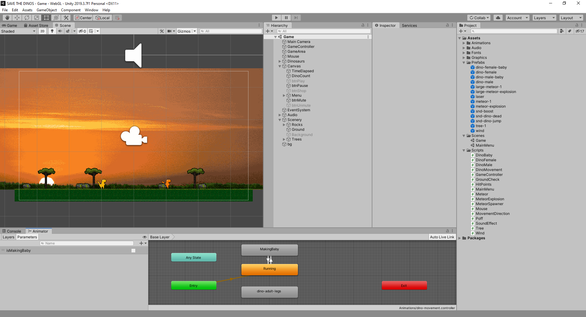

Fierce meteorites hail down on Dino Land and the Dinos need to repopulate quickly before they all go down in history.
Click meteorites to shoot them with your laser and click Dinos to make them dash in their opposite direction.
Made by me in 72 hours for the game jam Ludum Dare 46.
Play the game here: https://marcusnystrand.itch.io/save-the-dinos
Play the game here: https://marcusnystrand.itch.io/save-the-dinos

“It took me a while to realize I can click the dinosaurs to change their direction, which changed everything. I kept them all near the side of the screen, but eventually one single fast big asteroid wiped them all up.”
BoltKey (@boltkey)
“Really unforgiving, but pretty fun”
bassguitarbill (@bassguitarbill)